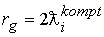

|
В. И. ЕЛИСЕЕВ ВВЕДЕНИЕ В МЕТОДЫ ТЕОРИИ
ФУНКЦИЙ ПРОСТРАНСТВЕННОГО КОМПЛЕКСНОГО ПЕРЕМЕННОГО |
|
7.6. Формула расчета масс элементарных частиц.
Закон тяготения Ньютона
определяет силу, с которой взаимодействуют две массы на расстоянии от их центров ( на расстоянии сферических окрестностей их гравитационных радиусов) r.
Потенциал взаимодействия равен и по логике представляет энергию взаимодействия (дефект массы). Таким образом, можно записать
Полевая гравитационная энергия вычисляется по формуле
Закон электромагнитного взаимодействия двух элементарных зарядов выражается в виде
.Потенциал взаимодействия определяется по формуле
и представляет дефект энергии взаимодействия и может быть выражен через энергию поля
Откуда полевая энергия взаимодействия масс
с зарядами е,е будет выражаться формулой
Полученные соотношения по новому определяют физическую характеристику потенциала при взаимодействии частиц. Энергия взаимодействия частиц есть дефект масс взаимодействующих частиц. Разность потенциалов определяет изменение дефекта массы при изменение расстояния между взаимодействующими частицами. Полевая энергия учитывается в формулах величинами
Если
то получаем зависимость где
Если
, то получимТаким образом, эквивалентность гравитационного и электромагнитного полей определено фундаментальной гравитационной массой
Если
имеем электромагнитную массу частицыB исследованиях начала координат и гравитационного радиуса поля тяготения Шварцшильда было получено соотношение, которое в комплексном пространстве отделяет пространство одной частицы от пространства другой. Другими словами при переходе через поверхность гравитационного радиуса частицы попадаем в пространство другой частицы.
Рассмотрим взаимодействие двух частиц с позиций этого соотношения. Проведем последовательно преобразования
, , ,
Для соблюдения предыдущего равенства необходимо, чтобы гравитационный радиус был равен удвоенной комптоновской длине волны частицы
.Комптоновская длина волны протона равна
Определим массу протона
Таким образом, протон есть результат взаимодействия двух фундаментальных масс
на расстоянии комптоновской длины волны протона. Это взаимодействие дает массу протона.
Комптоновская длина волны электрона равна
Классический радиус электрона
.Рассчитаем массы электрона
Электромагнитная масса электрона равна
Таким образом, элементарные частицы протон и электрон есть результат гравитационного взаимодействия двух фундаментальных масс
на расстоянии равном комптоновской длине волны этих частиц . Элементарные частицы есть результат дефекта масс при взаимодействии. Полевая энергия взаимодействия для протона равнаКривизна пространства, которую задают фундаментальные массы, определяют огромную полевую энергию их взаимодействия между собой. Протон организован силами, которые в
10^9раз превышают его собственную энергетическую массу.Преобразование интервала поля тяготения ШВАРЦШИЛЬДА по законам пространственной комплексной алгебры показывает, что гравитационная фундаментальная масса
В микромире нет евклидового пространства. ВСЕ ПРОСТРАНСТВО ПСЕВДОЕВКЛИДОВО, поэтому не должно существовать различия в описании электромагнитных и гравитационных взаимодействий. РАСЧЕТ ПОКАЗАЛ, ЧТО НА ФУНДАМЕНТАЛЬНОМ РАССТОЯНИИ ДЛЯ ФУНДАМЕНТАЛЬНЫХ МАСС ГРАВИТАЦИОННОЕ ПОЛЕ АДЕКВАТНО ЭЛЕКТРОМАГНИТНОМУ.
ВЗАИМОДЕЙСТВИЕ ФУНДАМЕНТАЛЬНЫХ МАСС НА РАССТОЯНИЯХ РАВНЫХ КОМПТОНОВСИМ ДЛИНАМ ВОЛН МИКРОЧАСТИЦ ДАЮТ МАССУ ЭТИХ ЧАСТИЦ.
Мини оглавление:
[0], [1.1.1, 1.1.2, 1.1.3, 1.1.4, 1.1.5, 1.1.6, 1.1.7, 1.1.8, 1.2, 1.2.1, 1.2.2, 1.2.2.a, 1.2.2.b, 1.2.2.c, 1.2.2.d, 1.2.2.e, 1.2.2.f, 1.2.2.g, 1.2.2.h, 1.2.3, 1.3.1, 1.3.2, 1.3.3, 1.3.4, 1.3.5, 1.3.6, 1.4.1, 1.4.2, 1.5, 1.6, 1.7.1, 1.7.2, 1.7.3.1, 1.7.3.2, 1.7.3.3, 1.7.4.1, 1.7.4.2, 1.8.1], [2.1, 2.2],[3.1, 3.2, 3.3, 3.4.1, 3.4.2, 3.4.3, 3.4.4, 3.4.5],[4.1, 4.2, 4.3, 4.4],[5.1, 5.1.Рис.52, 5.2, 5.3, 5.4, 5.4.Т1, 5.4.Т2, 5.4.Т3, 5.5.1, 5.5.2, 5.5.3, 5.5.4],[6.1.1, 6.1.2, 6.2.1, 6.2.2, 6.2.3, 6.2.4, 6.2.5, 6.3, 6.4.1, 6.4.2, 6.5.1, 6.5.2],[7.1, 7.2, 7.3, 7.4, 7.5, 7.6, 7.7.1, 7.7.2, 7.8.1, 7.8.2, 7.8.3, 7.9],[8.1, 8.2.1, 8.2.2, 8.3, 8.4, 8.5, 8.6, 8.6.T1, 8.7, 8.8.1, 8.8.2, 8.8.3, 8.9.1, 8.9.2, 8.9.3, 8.10, 8.10.T2, 8.10.T3],[9.1, 9.2, 9.3, Рис.88, 89, 90, 91, 92, 93, 94, 95, 96, 97, 98, 99, 100],[10.1, 10.2, 10.3, 10.4, 10.5, 10.6, 10.7, 10.8, 10.9, 10.10, 10.11, 10.12, 10.13, 10.14, 10.15.1, 10.15.2, 10.16.1, 10.16.2, 10.17, 10.18],[11]
Размещенный материал является электронной версией книги: © В.И.Елисеев, "Введение в методы теории функций пространственного комплексного переменного", изданной Центром научно-технического творчества молодежи Алгоритм. - М.:, НИАТ. - 1990. Шифр Д7-90/83308. в каталоге Государственной публичной научно-технической библиотеки. Сайт действует с 10 августа 1998.
E-mail: mathsru@gmail.com